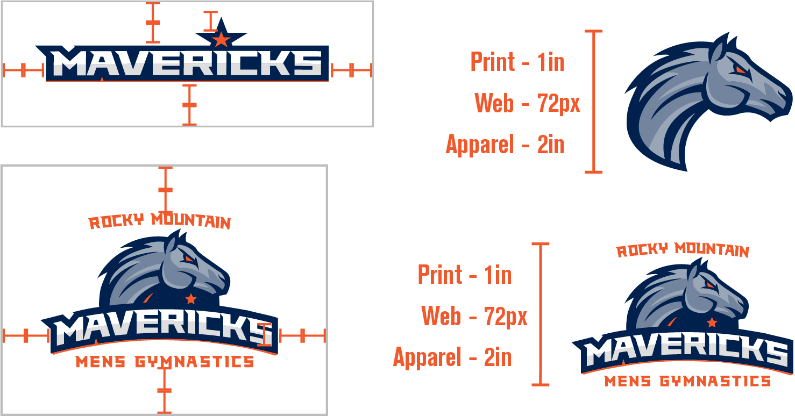
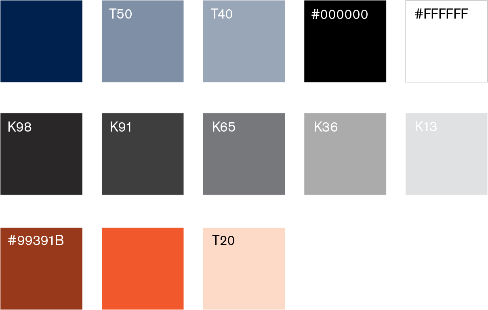
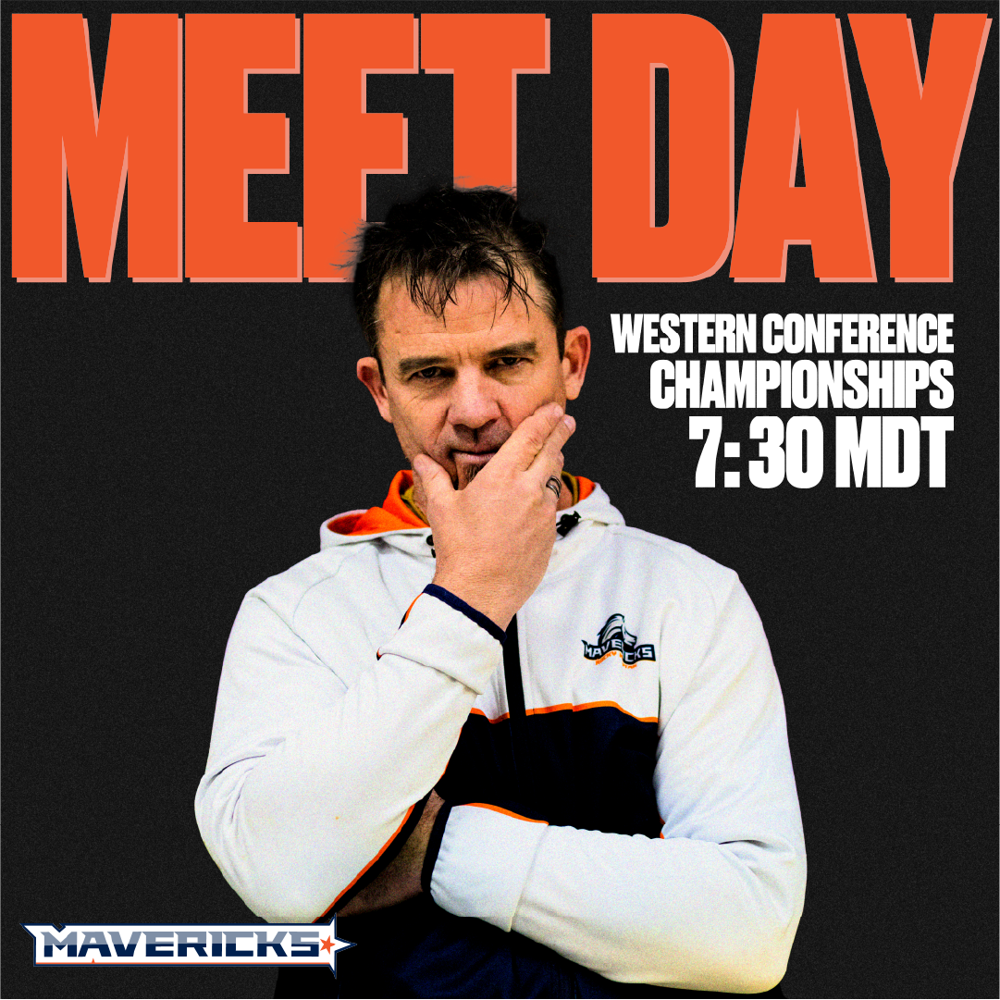
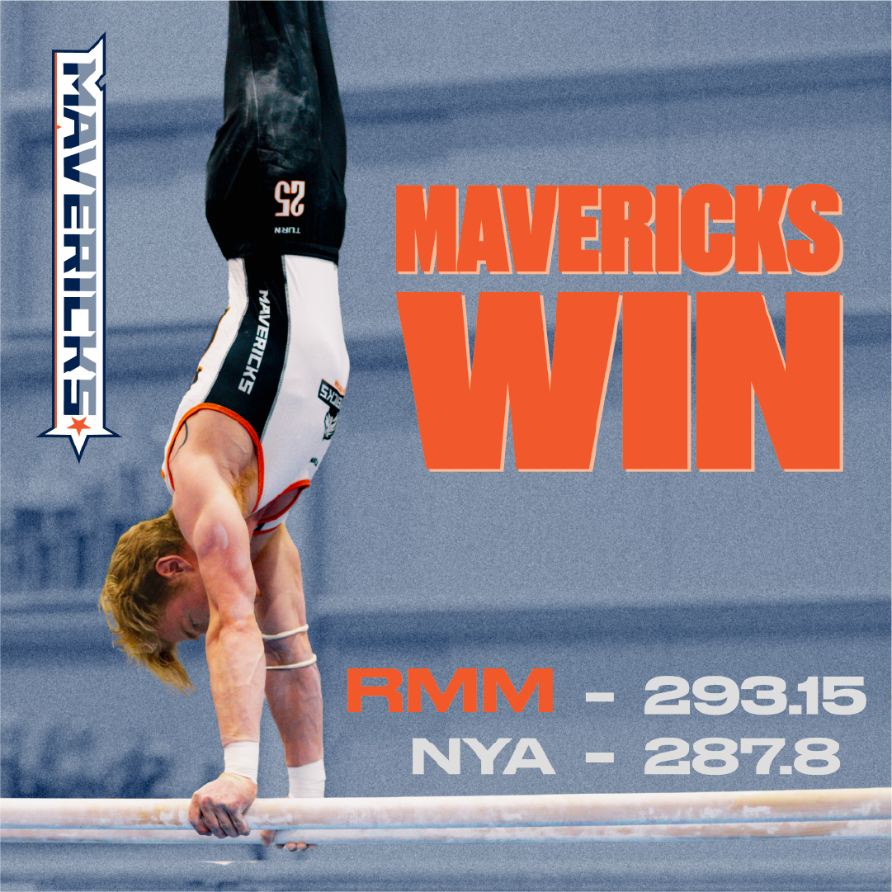
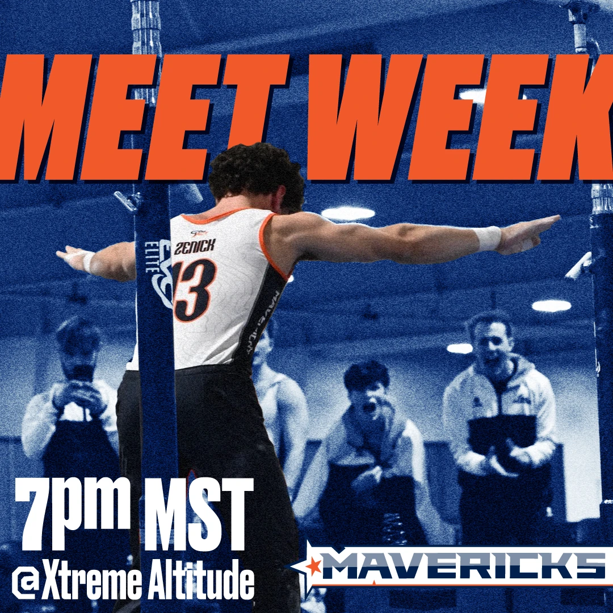
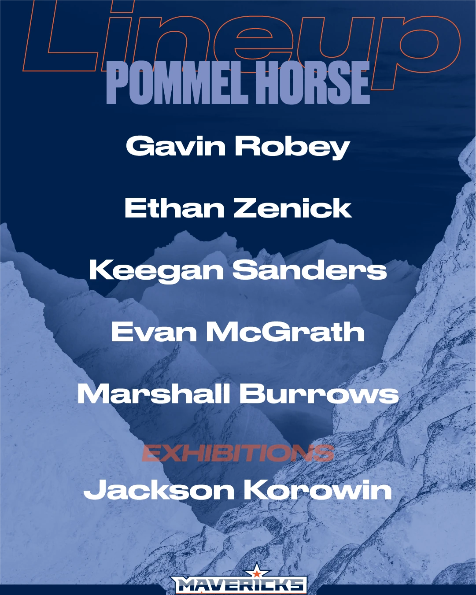

About
The Rocky Mountain Mavericks is a men's gymnastics team located in Colorado that competes in the GymACT league of collegiate men's gymnastics programs. I was given the opportunity to further develop and flesh out the logo and brand based on a couple of preliminary logos that were given after a complete rebrand.
The Brief
A sharper identity for a team finding its footing.
I took the existing logo and recolored it to reference Blucifer, the blue horse statue by the Denver airport, to help differentiate the Mavericks from the local Broncos football team. After fleshing this out into a variety of assets and form factors, I helped them implement the new imagery across their website, social media, merch, and uniforms.
The Brand
Logo, color, and a system built to travel.
The refreshed identity expanded the preliminary rebrand into a full visual toolkit: alternate logos, a Blucifer-inspired palette, and presentation-ready assets that could hold up across digital and print touchpoints.


My Role
What I did on the Mavericks rebrand.
- Logo recolor
- Asset cleanup and creation
- Alternate logos
- Brand guide
- Social media posts
- Merch designs
- Team portraits
- Website cleanup
In Practice
Social posts, lineups, and team portraits in the wild.
The new system rolled out across meet-week graphics, score recaps, and portrait photography — giving the team a consistent look from Instagram to the gym floor.






Impact
A brand the team could actually wear.
Following the redesign and implementation across their brand, there was a huge increase in merch sales — over 2x the previous year. The next season their social media following increased by 50%, as did their new recruits, thanks to a clearer website and more social media presence.
The team members were proud of the new logos and said they felt more legit as a team competing amongst many former NCAA programs. Their new brand has continued to carry them into subsequent seasons, and their newest uniforms include the new versions of the logo as well.